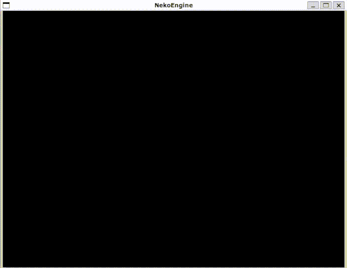

|
R-Touhou
R-Type like game in C++!
|
|
R-Touhou
R-Type like game in C++!
|
Creating a R-Type like game in C++, with multiplayer Co-Op.
Aurélien Schulz aka @Lisieshy
Eliott Ferry aka @EliottFerry
Pierre Fricker aka @Exy-tek
Thomas Moreau aka @zoomzoomzen
Tom Wederich aka @TheGorb
First of all, you need Conan
Then, you need CMake >=3.20
You also obviously need g++ to compile the cpp code.
Once you have everything installed, follow these steps :
$ conan profile new --detect default
for linux: code ~/.conan/profiles/ for windows: code C:/Users/<USERNAME>/.conan/profiles
compiler.cxx=libstdc++ to compiler.cxx=libstdc++11.build_type variable to change between Debug, Release, MinSizeRel and RelWithDebInfo. Be sure to match the one you'll use with CMake in the next steps.[settings] os=Linux os_build=Linux arch=x86_64 arch_build=x86_64 compiler=gcc compiler.version=10 compiler.libcxx=libstdc++11 build_type=Release [options] [build_requires] [env]
$ conan remote add bincrafters https://bincrafters.jfrog.io/artifactory/api/conan/public-conan $ conan config set general.revisions_enabled=1
$ mkdir build $ cd build
$ conan install .. --build=missing /* Installing Dependencies, wait for a few minutes. */ /* Make sure the DCMAKE_BUILD_TYPE is the same as the build_type in your conan profile. */ $ cmake .. -DCMAKE_BUILD_TYPE=Release -G "Unix Makefiles" $ make
If you're using WSL2, you can use both linux.sh and windows.sh to compile for both platforms, directly from Linux.
!! THIS REQUIRES TO HAVE WSL2 AND WINDOWS 11 !!
The NekoEngine is actually quite simple to use, but I'll explain the important stuff here.
First things first, you need to create a ne::Scene.
It constructs and destroys itself at the beginning and end of the scope, as long as you don't define it as a global or static variable. Never, ever do that.
Once you have your scene, you need to register the components to the Coordinator so that it knows where and how to store them in memory.
But first, you need components to use!
Components are as simple as it gets. They're only here to store data about the entities. Here are some example components.
So now that you have components to register, you do it like this :
After that, you're going to need some entities to play with.
Creating an entity is pretty simple, since every entity is just a single ne::EntityID.
Just call the Coordinator's createEntity() function, and store the resulting ID.
For example, let's say we want to create 10 entities, each with a Transform component, we'd do something like :
Now with this done, you'll have to create a System.
A System can be anything, from a Rendering System to a Physics Systems, your imagination is the only limit!
Implementing a System is the hardest part of using the ECS.
A system has to inherit from the ne::System class for it to work with the Engine.
Implementing a simple physics system would look like this
Now, you only need one last thing, and that's to register the PhysicsSystem in the Scene's Coordinator. To do that, you need quite a few things.
Registering a System requires what we call a ne::Signature.
A signature is just a way of telling our system to iterate only over entities that belong to him.
You don't want your Physics System accessing a ne::RigidBody on an entity that doesn't have one, that's why Systems need to know what kind of entity to look for in memory.
Creating a System and a signature is done like this, using the Coordinator's registerSystem function :
With all that beefy code now done, you have created a Physics System that will only iterate over entities that matche this componentType signature.
Now, to actually implement the PhysicsSystem update function :
Last thing to do is to now call the PhysicsSystem->update() function and passing it the deltaTime of your rendering loop.
And that's it! You're done setting it up.
You can always go further, by editing this code a bit to add some randomness and an actual Render System could get a result like that! 
The internal documentation is generated using Doxygen. It uses the doxygen-awesome theme. It is available at this address.
 1.9.2
1.9.2